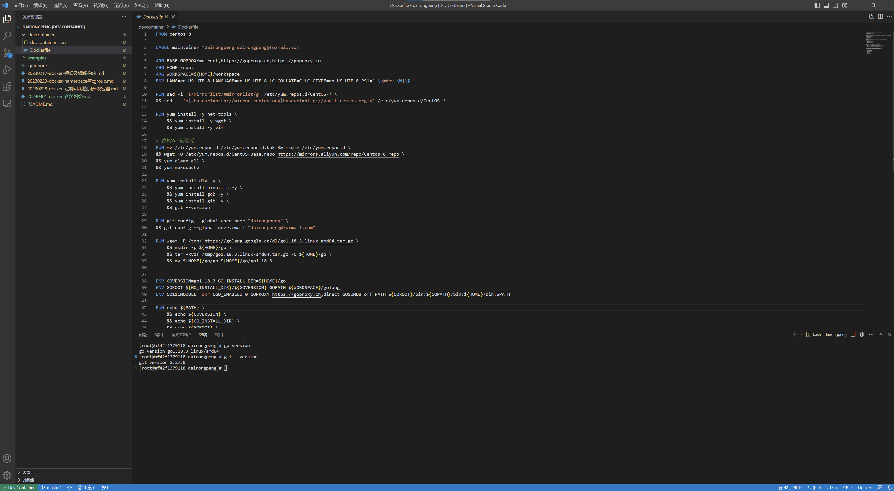

配置容器开发环境
背景
日常开发中，如果我们有不同平台的开发环境，需要适应多个平台的特性，增加工作负担。例如我会在家中使用配置较高的PC开发，在公司会使用Mac开发。假如我们能不依赖本地操作系统的平台，快速构建目标开发环境，并且该环境可以轻松的移植，就完美解决了这个问题。
Docker容器开发环境
Docker容器开发环境是一种远程开发的思路，详细操作步骤Microsoft介绍的很详细。借助 Visual Studio Code 将 Docker 容器用作开发环境
目标环境准备
- CentOS
- Vim
- Git
- Golang
准备Dockerfile
FROM centos:8
LABEL maintainer="dairongpeng dairongpeng@foxmail.com"
ARG BASE_GOPROXY=direct,https://goproxy.cn,https://goproxy.io
ARG HOME=/root
ARG WORKSPACE=${HOME}/workspace
ENV LANG=en_US.UTF-8 LANGUAGE=en_US.UTF-8 LC_COLLATE=C LC_CTYPE=en_US.UTF-8 PS1='[\u@dev \W]\$ '
RUN sed -i 's/mirrorlist/#mirrorlist/g' /etc/yum.repos.d/CentOS-* \
&& sed -i 's|#baseurl=http://mirror.centos.org|baseurl=http://vault.centos.org|g' /etc/yum.repos.d/CentOS-*
RUN yum install -y net-tools \
&& yum install -y wget \
&& yum install -y vim
# 替换Yum镜像源
RUN mv /etc/yum.repos.d /etc/yum.repos.d.bak && mkdir /etc/yum.repos.d \
&& wget -O /etc/yum.repos.d/CentOS-Base.repo https://mirrors.aliyun.com/repo/Centos-8.repo \
&& yum clean all \
&& yum makecache
RUN yum install dlv -y \
&& yum install binutils -y \
&& yum install gdb -y \
&& yum install git -y \
&& git --version
RUN git config --global user.name "dairongpeng" \
&& git config --global user.email "dairongpeng@foxmail.com"
RUN wget -P /tmp/ https://golang.google.cn/dl/go1.18.3.linux-amd64.tar.gz \
&& mkdir -p ${HOME}/go \
&& tar -xvzf /tmp/go1.18.3.linux-amd64.tar.gz -C ${HOME}/go \
&& mv ${HOME}/go/go ${HOME}/go/go1.18.3
ENV GOVERSION=go1.18.3 GO_INSTALL_DIR=${HOME}/go
ENV GOROOT=${GO_INSTALL_DIR}/${GOVERSION} GOPATH=${WORKSPACE}/golang
ENV GO111MODULE="on" CGO_ENABLED=0 GOPROXY=https://goproxy.cn,direct GOSUMDB=off PATH=${GOROOT}/bin:${GOPATH}/bin:${HOME}/bin:$PATH
RUN echo ${PATH} \
&& echo ${GOVERSION} \
&& echo ${GO_INSTALL_DIR} \
&& echo ${GOROOT} \
&& echo ${GOPATH} \
&& go version
WORKDIR ${WORKSPACE}
验证开发容器
构建镜像：
~/workspace/house/dairongpeng/.devcontainer/ [master*] docker build -t devcontainer:v1.0.0 .
[+] Building 9.3s (13/13) FINISHED
=> [internal] load build definition from Dockerfile 0.0s
=> => transferring dockerfile: 2.00kB 0.0s
=> [internal] load .dockerignore 0.0s
=> => transferring context: 2B 0.0s
=> [internal] load metadata for docker.io/library/centos:8 0.2s
=> [1/9] FROM docker.io/library/centos:8@sha256:a27fd8080b517143cbbbab9dfb7c8571c40d67d534bbdee55bd6c473f432b177 0.0s
=> CACHED [2/9] RUN sed -i 's/mirrorlist/#mirrorlist/g' /etc/yum.repos.d/CentOS-* && sed -i 's|#baseurl=http://mirror.centos.org|baseurl=http://vault.centos.org|g' /etc/yum.repos.d/CentOS-* 0.0s
=> CACHED [3/9] RUN yum install -y net-tools && yum install -y wget && yum install -y vim 0.0s
=> CACHED [4/9] RUN mv /etc/yum.repos.d /etc/yum.repos.d.bak && mkdir /etc/yum.repos.d && wget -O /etc/yum.repos.d/CentOS-Base.repo https://mirrors.aliyun.com/repo/Centos-8.repo && yum clean all && yum makecache 0.0s
=> CACHED [5/9] RUN yum install dlv -y && yum install binutils -y && yum install gdb -y && yum install git -y && git --version 0.0s
=> CACHED [6/9] RUN git config --global user.name "dairongpeng" && git config --global user.email "dairongpeng@foxmail.com" 0.0s
=> CACHED [7/9] RUN wget -P /tmp/ https://golang.google.cn/dl/go1.18.3.linux-amd64.tar.gz && mkdir -p /root/go && tar -xvzf /tmp/go1.18.3.linux-amd64.tar.gz -C /root/go && mv /root/go/go /root/go/go1.18.3 0.0s
=> CACHED [8/9] RUN echo /root/go/go1.18.3/bin:/root/workspace/golang/bin:/root/bin:/usr/local/sbin:/usr/local/bin:/usr/sbin:/usr/bin:/sbin:/bin && echo go1.18.3 && echo /root/go && echo /root/go/go1.18.3 && echo /root/workspace/golang && go ve 0.0s
=> [9/9] WORKDIR /root/workspace 0.1s
=> exporting to image 8.8s
=> => exporting layers 8.8s
=> => writing image sha256:5808d02e1aa09ec300529d54a7cc6b62e8af7142abddfc62ef4bfc56bc5dfad5 0.0s
=> => naming to docker.io/library/devcontainer:v1.0.0 0.0s
启动开发容器：
~/workspace/house/dairongpeng/.devcontainer/ [master*] docker run -d -it --name devcontainer devcontainer:v1.0.0
c16aa496be22e3a8af08573cb10405acf9faadb9bc97ae3f06bcd4a0da87d3c5
~/workspace/house/dairongpeng/.devcontainer/ [master*] docker ps
CONTAINER ID IMAGE COMMAND CREATED STATUS PORTS NAMES
c16aa496be22 devcontainer:v1.0.0 "/bin/bash" 5 seconds ago Up 4 seconds devcontainer
e258facfce89 nginx "/docker-entrypoint.…" 2 days ago Up 2 days my_nginx
88cf7d5efad7 yandex/clickhouse-server "/entrypoint.sh" 2 days ago Up 2 days clickhouse-server
~/workspace/house/dairongpeng/.devcontainer/ [master*] docker exec -it c16aa496be22 /bin/bash
[root@dev workspace]# ls
[root@dev workspace]# pwd
/root/workspace
[root@dev workspace]# go version
go version go1.18.3 linux/amd64
[root@dev workspace]# git --version
git version 2.27.0
[root@dev workspace]#
准备devcontainer.json
在vscode项目下，安装容器开发的插件，选择基础环境，会自动建立.devcontainer文件夹(参考文档开头的链接)。在该文件夹下，重写devcontainer.json
{
"build": {
"dockerfile": "Dockerfile"
}
}
并且拷贝我们之前准备的Dockerfile文件到该文件夹下。结构如下：
~/workspace/house/dairongpeng/.devcontainer/ [master*] tree
.
├── Dockerfile
└── devcontainer.json
0 directories, 2 files
在开发容器中打开项目
利用vscode dev container插件，选择在容器中打开项目（Reopen in Container）, 稍作等待，即可看到我们的项目运行在了我们的开发容器中。此时在vscode中打开terminal，会显示此时的终端环境已经是容器中的环境，可以愉快的跨平台开发了。
